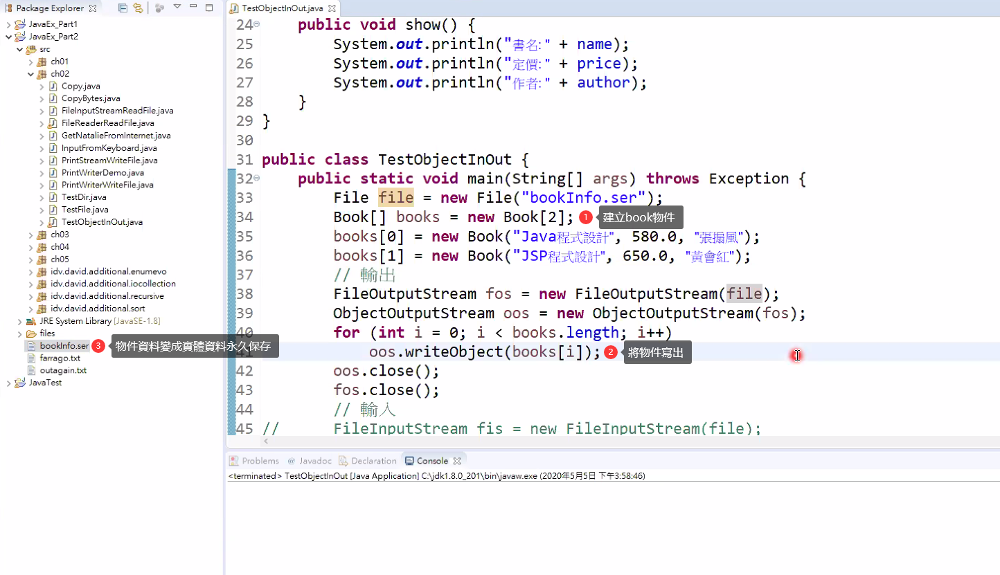

目錄
1. 物件的輸入與輸出
將物件寫出與讀入
寫出物件: 使用 ObjectOutputStream 類別寫出物件讀入物件: 使用 ObjectInputStream 類別讀入物件
java.io.Serializable(空介面)[1]:
物件是動態產生的，欲將物件
永久儲存[2]時，稱做persistence欲將某
物件[3]的資料儲存(寫出)到 OutputStream(檔案或 socket[4])時，該物件必須實作 Serializable[5] 空介面序列化過程: 物件可能很大，這樣資料無法通過傳輸，所以要通過序列化的方式將物件拆解成更小的資料單位，這樣才能通過硬體傳輸上的限制至序列化與反序列化過程生活化用例: 買了家具後會被拆成一小塊一小塊的小物件(序列化)才能裝進紙箱裡面，到收貨的時候將小物件裝回成家具(反序列化)，反序列化時也要看物件的說明書(設計圖)即看類別序列化是
分散式運算的基礎(分散式運算主要在大數據班的部分會做到相關操作)
宣告為 transient 與 static 的資料成員
不會被序列化如果某資料成員
不想被 serialized，程式設計者可以自行(主動)加上 transient修飾子因為宣告為 static 的變數與方法，不是由任何此類別的物件單獨擁有，而是由屬於此類別所有物件共同擁有
2. 將物件寫出與讀入的建構子
將物件寫出與讀入的建構子
寫出:ObjectOutputStream(OutputStream out) throws IOException讀入:ObjectInputStream(InputStream in) throws IOException建構子參數要求再放別的水管，其實代表此類別為我們稱的高階 I/OInputStream in跟OutputStream out就是一種放入別的管子的動作
將物件寫出與讀入的方法
寫出: voidwriteObject(Objectobj) throws IOException- Object 是為了
多型
- Object 是為了
讀入: ObjectreadObject() throws IOException，ClassNotFoundException- 物件結構需存在，即
classpath可以找到就好
- 物件結構需存在，即
物件讀入注意事項
物件讀入順序必須與物件寫出順序相同
Object readObject() 的回傳型態為 Object，必須自行強迫轉型為原來寫出時的物件型態

3. 序列化實作
序列化了 10 個物件，分別是 Book 中的 兩個 String 物件和 Integer 物件，與添加的兩個 Book 物件
序列化的物件需連物件類別中的資料都可序列化，才可執行成功
static[6] 與transient都可以讓物件不被序列化private static double price;private transient double price;
使用 transient 的話不會被序列化，但仍是實體變數
- 使用 static 的話變成類別的東西，所以不會被序列化
package ch02;
import java.io.EOFException;
import java.io.File;
import java.io.FileInputStream;
import java.io.FileOutputStream;
import java.io.ObjectInputStream;
import java.io.ObjectOutputStream;
import java.io.Serializable;
// 要將物件寫入文件中，要序列化
// 有序列化，Java就會在當下class中添加 serialVersionUID(UID) 即說明書版本不對
// 用意是怕資料被竄改，所以需要來源確認
class Book implements Serializable {
// 自訂UID且須設定為 final，使值無法被JAVA更動
// 對反序列化的相容性增加，對應版本更動造成[反序列化]不相容的情形
private static final long serialVersionUID = 8315449942815314809L;
// 如果加上 transient ，該屬性不會加入序列化
private String name;
private double price;
private Integer quantity;
private String author; // 有定義 serialVersionUID 才可自行增減需序列化的Class的內容
public Book(String name, double price, String author, Integer quantity) {
this.name = name;
this.price = price;
this.author = author;
this.quantity = quantity;
}
public void show() {
System.out.println("書名: " + name);
System.out.println("定價: " + price);
System.out.println("作者: " + author);
System.out.println("數量: " + quantity);
}
}
public class TestObjectInOut {
public static void main(String[] args) throws Exception {
File file = new File("bookInfo");
// 輸出
// -------------------------------------------------------
// 實體化物件陣列
Book[] books = new Book[2];
// 添加書本
books[0] = new Book("Java程式設計", 580.0, "張搧風", 10);
books[1] = new Book("JSP程式設計", 650.0, "黃會紅", 12);
FileOutputStream fos = new FileOutputStream(file);
ObjectOutputStream oos = new ObjectOutputStream(fos);
for (int i = 0; i < books.length; i++)
// 將物件送出 book 以 object 這樣的方法送到目的地
oos.writeObject(books[i]);
// 關閉資料流
oos.close();
fos.close();
// 輸入
// -------------------------------------------------------
FileInputStream fis = new FileInputStream(file);
ObjectInputStream ois = new ObjectInputStream(fis);
System.out.println(file.getName() + "檔案內容如下: ");
System.out.println("--------------------");
try {
while (true) {
// 因為拿到的物件身分是 Object，所以須從 Object 轉型回 Book
((Book) ois.readObject()).show();
System.out.println("--------------------");
}
} catch (EOFException e) {
// EOFException 當源頭沒資料，卻讀取了就會發生此例外
System.out.println("資料讀取完畢！");
}
ois.close();
fis.close();
}
}
- 範例程式:
/JavaEx_Part2/src/ch02/TestObjectInOut.java